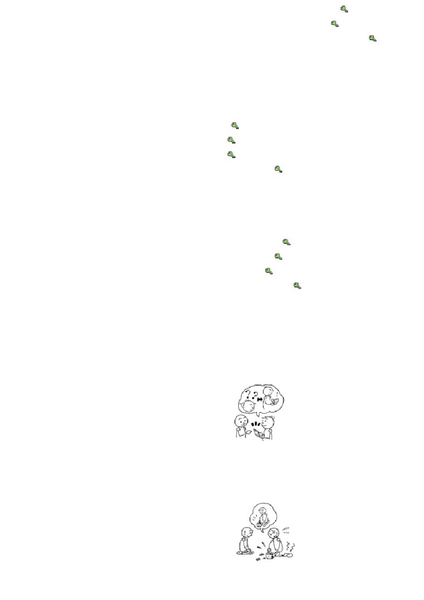

第３６課
課:36 (頁:1/10)
ことば
1.
とどきます
Ⅰ
届きます
送〔
行李〕
［にもつが～］
［荷物が～］
2.
でます
Ⅱ
出ます
參加〔
比賽〕
［しあいに～］
［試合に～］
3.
うちます
Ⅰ
打ちます
打〔
文字處理機〕
［ワープロを］
4. ちょきんします Ⅲ
貯金します
儲蓄，存錢
5. ふとります Ⅰ
太ります
長胖
6. やせます Ⅱ
變瘦
7.
すぎます
Ⅱ
過ぎます
過〔7
點〕
［7じを～］～
［7時を～］
8.
なれます
Ⅱ
慣れます
適應〔
習慣〕
［しゅうかんに～］
［習慣に～］
9. かたい
硬い
硬
10. やわらかい
軟らかい
軟
11. でんし～
電子～
電子～
12. けいたい～
携帯～
攜帶式～
13. こうじょう
工場
工廠
14. けんこう
健康
健康
15. けんどう
剣道
劍道
16. まいしゅう
毎週
每週，每星期
17. まいつき
毎月
每月
18. まいとし（ まいねん ） 毎年
每年
19. やっと
終於
20. かなり
相當，很
21. かならず
必ず
一定，肯定
22. ぜったいに
絶対に
絕對（和否定形一起使用）
23. じょうずに
上手に
擅長
24. できるだけ
儘量
25. このごろ
這些天，最近
26. ～ずつ
每～，各～
課:36 (頁:2/10)
27.
その ほうが～
那樣比較～
28. ※ショパン
蕭邦（波蘭音樂家﹐1810～1849）
かい わ
会話
きゃく さま
お客様
客人，顧客
とく べつ
特別［な］
特別〔的〕
して いらつしゃいます
正在做～（して います的敬體）
すい えい
水泳
游泳
～とか、～とか
～或～等
タンゴ
探戈
チャレンジします Ⅲ
挑戰
き も
気持ち
心情，情緒
よ
もの
…読み物………………………………………………………………………………
の
もの
乗り物
交通工具
れき し
歴史
歷史
せい き
…世紀
…世紀
とお
遠く
遠處
き しゃ
汽車
火車
き せん
汽船
汽船
おお ぜい
大勢の～
很多（人）
はこ
運びます Ⅰ
運送
と
飛びます Ⅰ
飛翔
あん ぜん
安全［な］
安全〔的〕
う ちゅう
宇宙
宇宙
ち きゅう
地球
地球
きょう だい
※ライト兄弟
※萊特兄弟（美國航空先驅）
韋伯・萊特（1867～1912）
奧韋爾・萊特（1871～1948）
……………………………………………………………………………………
ぶん けい
文型
はや
およ
まい にち れん しゅう
1. 速く 泳げるように、毎日 練習して います。
じ てん しゃ
の
2. やっと 自転車に 乗れるように なりました。
まい にち にっ き
か
3. 毎日 日記を 書くように して います。
れい ぶん
例文
でん し じ しょ
それは 電子辞書ですか。
1.
し
き
しら
課:36 (頁:3/10)
…ええ。 知らない ことばを 聞いたら、すぐ 調べられるように、
も
持って いるんです。
あか
まる
い み
2.
カレンダーの あの 赤い 丸は どういう 意味ですか。
ひ
わす
…ごみの 日です。 忘れないように、つけて あるんです。
ふ とん
な
3.
布団には もう 慣れましたか。
はじ
ね
いま
…はい。 初めは なかなか 寝られませんでしたが、今は よく
ね
寝られるように なりました。
きょく
ひ
4.
ショパンの 曲が 弾けるように なりましたか。
ひ
…いいえ、まだ 弾けません。
はや
ひ
早く 弾けるように なりたいです。
こう じょう
ちか
うみ
およ
5.
工場が できてから、この 近くの 海では 泳げなく なりました。
ざん ねん
…そうですか。 残念ですね。
あま
もの
た
6.
甘い 物は 食べないんですか。
た
…ええ。 できるだけ 食べないように して いるんです。
からだ
その ほうが 体に いいですね。
じ
はじ
7.
コンサートは 6時に 始まります。
ぜっ たい
おく
おく
絶対に 遅れないように して ください。 遅れたら、
はい
入れませんから。
…はい、わかりました。
かい わ
会話
あたま
からだ
つか
頭と
体を 使うように して います
みな
けん こう
じ かん
アナウンサー： 皆さん、こんにちは。 健康の 時間です。
きゃく さま
さい
きょうの お客様は ことし 80歳の
お がわ
小川よねさんです。
お がわ
小川 よね ：
こんにちは。
げん き
なに
とく べつ
アナウンサー： お元気ですね。 何か 特別な ことを して
いらっしゃいますか。
お がわ
まい にち
うん どう
なん
た
小川 よね ：
毎日 運動して、何でも 食べるように して います。
うん どう
アナウンサー： どんな 運動ですか。
お がわ
すい えい
小川 よね ：
ダンスとか、水泳とか……。
さい きん
おど
最近 タンゴが 踊れるように なりました。
た
もの
アナウンサー： すごいですね。 食べ物は？
お がわ
小川 よね ：
なん
た
とく
さかな
す
課:36 (頁:4/10)
何でも 食べますが、特に 魚が 好きです。
まい にち
ちが
りょう り
つく
毎日 違う 料理を 作るように して います。
あたま
からだ
つか
アナウンサー： 頭と 体を よく 使って いらっしゃるんですね。
お がわ
らい ねん
い
おも
小川 よね ：
ええ。 来年 フランスヘ 行きたいと 思って、
ご
べん きょう
はじ
フランス語の 勉強も 始めました。
なん
き も
たい せつ
アナウンサー： 何でも チャレンジする 気持ちが 大切なんですね。
たの
はなし
楽しい お話、どうも ありがとう ございました。
れん しゅう
練習 Ａ
はや
そく たつ
だ
1.
早く
とどく
ように、
速達で 出します。
に ほん ご
まい にち
れん しゅう
日本語が
はなせる
毎日 練習します。
しん かん せん
はや
で
新幹線に
おくれない
早く うちを 出ます。
でん わ ばん ごう
電話番号を
わすれない
メモして おきます。
に ほん ご
2.
テレビの 日本語が かなり
わかる
ように なりました。
に ほん ご
じ ぶん
い けん
日本語で 自分の 意見が
いえる
はや
ワープロが 速く
うてる
に ほん ご
でん わ
3.
日本語で 電話が
かけられる
ように なりましたか。
しん ぶん
かん じ
新聞の 漢字が
よめる
そう さ
コンピューターの 操作が
できる
…いいえ、まだ
かけられ
ません。
よめ
でき
あそ
4.
あした 遊びに
いけな
く
なりました。
ちい
じ
小さい 字が
よめな
く
けっ こん しき
結婚式に
しゅっせきできな
く
し ごと
いそが
じ
5.
仕事が 忙しくても、
10時までに うちへ
かえる
ようにして います
こ
子どもと
あそぶ
スポーツクラブは
やすまない
ざんぎょうしない
や さい
6.
もっと 野菜を
たべる
ように して ください。
かい しゃ
やす
かなら
会社を 休む ときは、必ず
れんらくする
ぜっ たい
絶対に パスポートを
なくさない
ひと
な まえ
人の 名前を
まちがえない
れん しゅう
練習 Ｂ
れい
しん ぶん
よ
かん じ
べん きょう
課:36 (頁:5/10)
1.
例1： 新聞が 読めます・漢字を 勉強します
しん ぶん
よ
かん じ
べんきょう
→ 新聞が 読めるように、漢字を 勉強します。
れい
か ぞく
しん ぱい
て がみ
か
例2： 家族が 心配しません・手紙を 書きます
か ぞく
しん ぱい
て がみ
か
→ 家族が 心配しないように、手紙を 書きます。
き
おお
こえ
い
1)
はっきり 聞こえます・大きい 声で 言って ください →
とし
と
はたら
けん こう
き
2)
年を 取っても、働けます・健康に 気を つけて います →
やく そく
じ かん
わす
3)
約束の 時間を 忘れません・メモして おきます →
みち
ち ず
も
い
4)
道を まちがえません・地図を 持って 行きましょう →
れい
し ごと
れん しゅう
2.
例1： 仕事の あとで、ダンスを 練習して いるんですか。
おど
（ パーティー で 踊れます ）
おど
れん しゅう
→ ええ。 パーティーで 踊れるように、練習して いるんです。
れい
ちょ きん
とし
と
こま
例2： ボーナスは 貯金しますか。（ 年を 取ってから、困りません ）
とし
と
こま
ちょ きん
→ ええ。 年を 取ってから、困らないように、貯金します。
じゅう どう
なら
くに
かえ
おし
1)
柔道を 習って いるんですか。（ 国へ 帰ってから、教えられます ）
→
まい にち
れん しゅう
し あい
で
2)
毎日 テニスを 練習して いるんですか。（ 試合に 出られます ） →
たち いり きん し
かみ
こ
はい
3)
「立入禁止」の 紙が はって ありますね。（ 子どもが 入りません ）
→
よる
し
そと
なか
4)
夜は いつも カーテンを 閉めるんですか。（ 外から うちの 中が
み
見えません ） →
れい
に ほん ご
はな
すこ
3. 例： 日本語が 話せます・少し
に ほん ご
すこ
はな
→ 日本語が 少し 話せるように なりました。
しん ぶん
かん じ
よ
1)
新聞の 漢字が 読めます・ほとんど →
2)
テレビの ニュースが わかります・かなり →
ね
3)
このごろ 寝られます・よく →
う
4)
ワープロが 打てます・やっと →
れい
じ てん しゃ
の
4.
例： 自転車に 乗れます
じ てん しゃ
の
→ もう 自転車に 乗れるように なりましたか。
の
はや
の
……いいえ、まだ 乗れません。 早く 乗れるように
なりたいです。
つか
1)
パソコンが 使えます →
に ほん ご
か
2)
日本語で レポートが 書けます →
きょく
ひ
3)
ショパンの 曲が 弾けます →
に ほん ご
しん ぶん
よ
4)
日本語の 新聞が 読めます →
れい
ふと
ふく
き
5.
例： 太りました・服が 着られません
ふと
ふく
き
→ 太りましたから、服が 着られなく なりました。
こ
びょう き
りょ こう
い
1)
子どもが 病気に なりました・旅行に 行けません →

は
わる
かた
もの
た
課:36 (頁:6/10)
2)
歯が 悪く なりました・硬い 物が 食べられません →
ひ
こ
いぬ
か
3)
マンションに 引っ越ししました・犬が 飼えません →
まえ
たか
うみ
み
4)
うちの 前に 高い ビルが できました・海が 見えません →
れい
まい にち
ある
6.
例1： 毎日 歩きます
まい にち
ある
→ できるだけ 毎日 歩くように して います。
れい
の
例2： エレベーターに 乗りません
の
→ できるだけ エレベーターに 乗らないように して います。
まい つき
まん えん
ちょ きん
1)
毎月 5万円ずつ 貯金します →
や さい
た
2)
野菜を たくさん 食べます →
い
もの
か
3)
要らない 物は 買いません →
からだ
よわ
む り
4)
体が 弱いですから、無理を しません →
れい
き そく
まも
き そく
まも
7.
例1： 規則を 守ります →
規則を 守るように して ください。
れい
やく そく
じ かん
おく
例2： 約束の 時間に 遅れません
やく そく
じ かん
おく
→ 約束の 時間に 遅れないように して ください。
し ごと
やす
かなら
れん らく
1)
仕事を 休む ときは、必ず 連絡します →
しょく じ
かなら
は
みが
2)
食事の あとで、必ず 歯を 磨きます →
ぜっ たい
3)
絶対に パスポートを なくしません →
よる
じ
す
でん わ
4)
夜 11時を 過ぎたら、電話を かけません →
れん しゅう
練習 Ｃ
でん し じ しょ
も
1. Ａ: いつも 電子辞書を 持って いるんですか。
あたら
き
Ｂ: ええ。 新しい ことばを 聞いたら、
い み
しら
も
すぐ 意味が 調べられるように、持って いるんです。
Ａ: そうですか。
1) カメラ
もの
み
おもしろい 物を 見ます
しゃ しん
と
写真が 撮れます
けい たい でん わ
2) 携帯電話
なに
何か あります
れん らく
連絡できます
ちゃ
じょう ず
2. Ａ:
お茶は 上手に なりましたか。
Ｂ: いいえ、まだまだです。
はや
じょう ず
ちゃ
早く 上手に お茶が
たてられるように なりたいです。
けん どう
1) 剣道
し あい
で
試合に 出られます
りょう り
2)
料理
りょう り
つく
おいしい 料理が 作れます
にく
た
課:36 (頁:7/10)
3. Ａ:
肉を 食べないんですか。
さい きん
さかな
や さい
た
Ｂ: ええ。 最近は できるだけ 魚や 野菜を 食べるように して
いるんです。
からだ
その ほうが 体に いいですね。
Ａ:
の
1) ビールを 飲みません
さけ
の
お酒を 飲みません
の
2)
バスに 乗りません
えき
ある
駅まで 歩きます
もん だい
問題
れい
うん どう
1.
1)
…例： はい、運動するようにしています。
れい
すこ
よ
2)
…例： はい、少し読めるようになりました。
れい
3)
…例： いいえ、まだあまりわかりません。
れい
ね
4)
…例： いいえ、寝られます。
2.
1)
( ○ )
2)
( × )
3)
( × )
4)
( ○ )
5)
( × )
れい
き
おお
こえ
はな
3. 例1： よく
（ 聞こえる ） ように、大きい 声で 話して ください。
れい
びょう き
た
もの
き
例2： 病気に （ ならない ） ように、食べ物に 気を つけて います。
およ
なつ やす
1)
50メートル （ 泳げる ） ように、夏休みは できるだけ プールヘ
れん しゅう
い
おも
練習に 行こうと 思って います。
なお
くすり
の
やす
2)
かぜが （ 治る ） ように、薬を 飲んで、ゆっくり 休みます。
き ぶん
わる
ふね
の
くすり
3)
気分が 悪く （ ならない ） ように、船に 乗る まえに、薬を
の
飲んで おきます。
とも だち
あ
やく そく
わす
て ちょう
か
4)
友達に 会う 約束を （ 忘れない ） ように、手帳に 書いて
おきます。
れい
う
う
4. 例1： （ ワープロを 打ちます→ ワープロが 打てる ）ように
なりましたか。
う
…はい、（ 打てるように なりました ）。
れい
おど
おど
例2： （ タンゴを 踊ります→ タンゴが 踊れる ） ように なりましたか。
おど
…いいえ、まだ （ 踊れません ）。
きょく
ひ
きょく
ひ
1)
（ショパンの 曲を 弾きます→ ショパンの曲が弾ける ） ように なりました
ひ
…はい、やっと （ 弾けるようになりました ）。
に ほん ご
しん ぶん
よ
に ほん ご
しん ぶん
よ
2)
（ 日本語の 新聞を 読みます→ 日本語の新聞が読める ） ように なりました
よ
…はい、かなり （ 読めるようになりました ）。
ず
ず
3)
（ パソコンで 図を かきます→ パソコンで図がかける ） ように なりました
…いいえ、まだ （ かけません ）。
りょう り
りょう り
4)
（ 料理を します→ 料理ができる） ように なりましたか。
かん たん
りょう り
つく
…ええ。でも、まだ 簡単な 料理しか （ できません（作れません））。
れい
かわ
みず
よご
さかな
課:36 (頁:8/10)
5.
例： 川の 水が 汚れましたから、魚が （ いなく ） なりました。
き
で
み
よ
着られません いません 出られません 見えません 読めません
たか
やま
み
1)
高い ビルが できましたから、山が （ 見えなく ）なりました。
ふと
き
2)
太りましたから、スーツが （ 着られなく ） なりました。
あし
し あい
で
3)
足に けがを しましたから、試合に （ 出られなく ） なりました。
さい きん
ちい
じ
よ
4)
最近 小さい 字が （ 読めなく ） なりました。
れい
し けん
じ かん
ぜっ たい
おく
6.
例1： 試験の 時間に 絶対に （ 遅れない ） ように して ください。
れい
まい にち
あさ
た
例2： 毎日 朝ごはんを （ 食べる ） ように して います。
おく
た
ちょ きん
ある
みが
む り
遅れます 食べます 貯金します 歩きます 磨きます 無理をします
しょく じ
かなら
は
みが
1)
食事の あとで、必ず 歯を （ 磨く ） ように して ください。
びょう き
たい へん
む り
2)
病気に なると、大変ですから、あまり （ 無理をしない ） ように して
ください。
まい つき
まん えん
ちょ きん
3)
毎月 2万円ずつ （ 貯金する ）ように して います。
よる
じ
す
みち
ある
4)
夜 10時を 過ぎたら、あの 道は （ 歩かない ） ように して います。
の
もの
れき し
7.
乗り物の 歴史
むかし
とお
ところ
ある
い
うま
ちい
ふね
昔は 遠い
所へも 歩いて 行きました。 馬や 小さい 船は
つか
い
ところ
すく
し
せ かい
使って いましたが、行ける 所は 少なくて、知って いる 世界は
せま
狭かったです。
せい き
ふね
とお
い
15世紀には、船で 遠くまで 行けるように なりました。 ヨーロッパの
ひと
ふね
とお
くに
い
めずら
もの
も
かえ
人は 船で 遠い 国へ 行って、珍しい 物を 持って 帰りました。
せい き
き しゃ
き せん
おお ぜい
ひと
もの
19世紀に 汽車と 汽船が できて、大勢の 人や たくさんの 物が
はこ
がい こく
い
ひと
おお
運べるように なりました。 外国へ 行く 人も 多く なりました。
ねん
きょう だい
ひ こう き
はじ
そら
と
いま
1903年に ライト兄弟の 飛行機が 初めて 空を 飛びました。 今は
おお
はや
あん ぜん
ひ こう き
せ かい
そら
と
大きくて、速くて、安全な 飛行機が 世界の 空を 飛んで います。
つぎ
ゆめ
う ちゅう
う ちゅう
い
次の 夢は 宇宙です。 だれでも 宇宙へ 行けるように
つき
あお
ち きゅう
み
しょく じ
なるでしょうか。 月で 青い 地球を 見ながら 食事できるように
なるかも しれませんね。
ふね
とお
い
1) いつごろ 船で 遠くまで 行けるように なりましたか。
せい き
い
…15世紀に行けるようになりました。
き しゃ
き せん
2) 汽車と 汽船が できて、どんな ことが できるように なりましたか。
おお ぜい
ひと
もの
はこ
…大勢の人やたくさんの物が運べるようになりました。
ひ こう き
はじ
そら
と
3)
いつ 飛行機が 初めて 空を 飛びましたか。
ねん
はじ
そら
と
課:36 (頁:9/10)
…1903年に初めて空を飛びました。
文法
１
動詞1 字典形
ように、 動詞
2
}
動詞 1 ない形 ない
動詞1 表示目的或目標的狀態，動詞2 表示為了達到目標的意志性動作。
はや
およ
まい にち れん しゅう
①速く 泳げるように、 毎日 練習して います 。
目標
（意志性的）動作
為了能游得更快，每天都在練習。
わす
②忘れないように、メモして ください。
目標
（意志性的）動作
為了不會忘記，請做筆記。
「ように
」之前要使用非意志動詞（例如：可能動詞、「わかります」「みえ
ます」「きこえます」「なります」等）的字典形
(①)或動詞的否定形
(②)。
２
. 動詞字典形 ように
なります
}
動詞 ない形 なく
1)「なります」表示從一種狀態變化到另一種狀態，可用可能動詞或「わかりま
す」「みえます」等表示能力、可能的動詞。「動詞字典形ように なります」
表示從不能的狀態變化到能的狀態。「動詞 形なく なります」剛好相反
（也就是說某種狀態發生了變化，原來的狀態消失了）。
まい にち れん しゅう
およ
③毎日 練習すれば、 泳げるように なります。
如果每天練習，就會游泳了。
じ てん しゃ
の
④やっと 自転車に 乗れるように なりました。
終於會騎腳踏車了。
とし
と
ちい
じ
よ
⑤年を 取ると、 小さい 字が 読めなく なります。
年紀一大，小的字就看不見了。
ふと
す
ふく
き
⑥太りましたから、 好きな 服が 着られなく なりました。
長胖了，喜歡的衣服都穿不下了。
2)對於像「～ように なりましたか」般的疑問句，用「いいえ」回答的情況如
下。
ひ
⑦ショパンが 弾けるように なりましたか。
ひ
…いいえ、まだ 弾けません。
蕭邦的作品會彈了嗎？
…不，還不會彈。
〔註〕教科書中雖然沒有提到，2
的句型中如果使用表示能力以外的動詞，就表
示“有了以前沒有的習慣”(⑧)
或“捨棄了以前的習慣”(⑨)
的意思。
に ほん じん
ねん
ぎゅう にく
ぶた にく
た
⑧日本人は １００ 年ぐらいまえから 牛肉や 豚肉を 食べるように
なりました。
日本人從 100年以前開始吃牛肉和豬肉的。
くるま
か
ある
課:36 (頁:10/10)
⑨車を 買ってから、わたしは あまり 歩かなく なりました。
買了車以後，我就不怎麼走路了。
「なれる」「ふとる」「やせる」等本來就表示變化的動詞不能用於這個句型中。
３
動詞字典形
ように します
}
動詞 ない形 ない
這個句型表示習慣性或持續性地努力做或不做某個動作。
1)～ように して います
表示習慣性、持續性注意的事情。
まい にち うん どう
なん
た
⑩毎日 運動して、 何でも 食べるように して います。
我每天運動，什麼都吃。
は
わる
あま
もの
た
⑪歯に 悪いですから、 甘い 物を 食べないように して います。
因為對牙齒不好，所以我不吃甜食。
2)～ように して ください
「～て／～ないで ください
」是直接的請求，而「～ように して くださ
い」是間接的請求，和「
～て／～ないで ください」相比，是更禮貌的請求，
其用法如下。
(1)要求向習慣性的、持續性的目標努力。
や さい
た
⑫もっと 野菜を 食べるように して ください。
請再多吃些蔬菜。
(2)禮貌地提出僅此一次的努力目標。
ぜっ たい
じ かん
おく
⑬あしたは 絶対に 時間に 遅れないように して ください。
明天請絕對不要遲到。
〔註〕「～ように して ください」不能使用於當場的請求。
しお
と
⑭すみませんが、 塩を 取って ください。
對不起，請拿一下鹽。
しお
と
×すみませんが、塩を 取るように して ください。
４ . とか
「～とか
」和「～や
」一樣用於舉例，但「～とか
」較口語化。另外和「～
や」不一樣，「
～とか」還可以放在最後的名詞之後。
⑮どんな スポーツを して いますか。
すい えい
…そうですね。テニスとか、 水泳とか……。
你都做些什麼運動？
…嗯，打打網球啦，游游泳啦……。